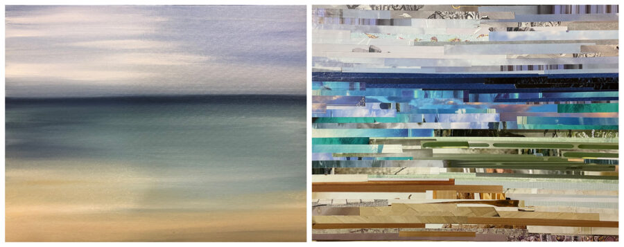

DUALITY
Jackson Junge Gallery is proud to present their first group exhibition of the year, DUALITY. This exhibition features the work of 24 artists who have set to create two pieces of art intended to be viewed as one piece, better known as a diptych. These diptychs in DUALITY each highlight the opposition or contrast between two concepts or two aspects of something – yin and yang, day and night, indoors and outdoors, light and dark – to name a few. DUALITY offers a variety of mediums and themes, creating a diverse viewing experience.
Artists took multiple approaches to DUALITY’s concept and theme. All opposing in some way, artists show this opposition in various principles including concept, style, medium, and color. Sabrina Katz’s “Serenity” shows the opposing styles that can be utilized to portray Lake Michigan. “One painting leans into the calm, steady horizon, while the other is a collage whose layered textures create the sense of endless movement within the water. Together they show how the same place can feel different from moment to moment or look different depending on the viewer,” states Katz. Bumpy Wilson also showcases opposing styles in his painting titled “Choice Beef II.” One painting in the diptych represents a minimal representation of a cow in a field, while the other shows the same image in a much looser abstract manner. Wilson expresses his interpretation of DUALITY stating, “Without duality, without polarity, there is no choice, there is no unique expression of self, and in essence, no self at all. This diptych provides a visual representation of how choices can define an artist and their style.”
Many diptychs in DUALITY explore conceptual opposition. Dan Gemkow’s photographs, “Watching | Watched” captures the moment of perception from two points of view. “Watching” shows a man outside looking straight on at the viewer, while “Watched” shows a woman looking out of a window, seemingly at the man. Gemkow states, “I applied an effect to the portrait of the female subject that inverted the highlights and shadows in the image to represent the distorted and abstracted way the male is seeing her. The male is printed normally without any added visual effects to show that the female is seeing him as he is and without any warped perception. I used these effects to symbolize a toxic personal relationship between the two subjects in the portraits.”
Julian Guyton explores opposing subjects in his diptych titled, “We the People No. 1 | We the People No. 2.” Guyton’s paintings represent his interpretation of what it means to be an American for those in power versus those who are not. In “We the People No. 1,” Guyton’s subject matters are meant to represent authority, including figures of a police officer and Uncle Sam. The phrase “together we stand, we the people” is shown in the piece, but questions who are these figures standing for? In “We the People No. 2,” Guyton shows a similar composition, this time showing three individuals representing black Americans. Guyton states, “The three characters in the piece are nods to my Blackness, taking an indirect approach while also inserting myself within the piece. The first figure, the bull, is an acknowledgment of my hometown (Chicago) while symbolizing the strength and resilience of the bull/black Americans. The second figure is just a business mogul; a creative that always strives for greater but is always problem solving and thinking. The last figure is the heart/spirt of black Americans. Moving through the world with unseen blessings to protect and cover our lives. Together we stand, we the people…”
Opposing color and tone is also demonstrated in DUALITY. Eugene Lee’s “Breath of Life | Death Gasp” captures ink drawings of abstracted lungs, but each piece shows an inversion of black and white. Lee states, “Together, the diptych uses visual opposition—light and dark, positive and negative space—to express the inseparable relationship between life and death. The lungs function as a unifying motif, reminding the viewer that every breath exists between these two extremes, and that vitality and mortality are not separate states, but mirrored halves of the same cycle.” Blake Adams shows opposition through color and black and white in his piece titled, “Wichita Day | Wichita Night.” Adams’ illustrative painting style represents the Wichita prairie – both identical aside from color and tone – creating a completely new, yet familiar, space.
With so many representations of what DUALITY means, viewers are sure to enjoy the range of work these artists have offered. This exhibition shows there is no limit to how we can create and interpret duality, which then encourages more thought and conversation. DUALITY will be on view at Jackson Junge Gallery March 2nd – April 19th, 2026, with an artist reception on Friday, March 6th from 6:00pm – 10:00pm. This exhibition is curated by Owners Chris Jackson and Laura Junge, Gallery Director Kaitlyn Miller, and Gallery Assistant Marisa Taravella.